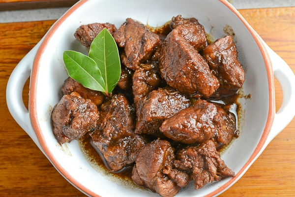

Home
Adobo(Pork or Chicken)

Description
Chicken Adobo is one of the most popular Filipino dishes. It is known for its rich, savory, and slightly tangy
flavor. The dish is cooked by simmering chicken in soy sauce, vinegar, garlic, bay leaves, and black
peppercorns. The result is tender, flavorful meat with a delicious sauce that pairs perfectly with steamed rice.
Adobo is simple to cook, uses basic pantry ingredients, and tastes even better the next day.
Ingredients
- 1 kg chicken or Pork (cut into serving pieces)
- 1/2 cup soy sauce
- 1/2 cup vinegar
- 1 cup water
- whole head garlic (minced)
- 2–3 dried bay leaves
- 1 teaspoon whole black peppercorns
- 1 tablespoon cooking oil
- 1 teaspoon sugar (optional)
- Salt to taste
- 1 medium onion (optional, sliced)
Step-by-Step Cooking Instructions
- Marinate the Chicken or Pork - In a bowl, combine the chicken/pork and soy sauce. Let it marinate for
at
least 30 minutes to 1 hour for better
flavor.
-
Sauté the Garlic - Heat cooking oil in a pan over medium heat. Sauté the garlic (and onion if using)
until
fragrant and slightly
golden.
-
Brown the Chicken/Pork- Add the marinated chicken/pork pieces (reserve the marinade). Cook for about
5
minutes on each side until lightly
browned.
- Add the Sauce - Pour in the reserved marinade, vinegar, and water. Do not stir immediately. Let it
boil
first for about 2–3
minutes.
-
Add Spices - Add bay leaves and black peppercorns. Lower the heat and let it simmer for 30–40 minutes
or
until the chicken is
tender.
-
Adjust the Taste- Add sugar if desired. Simmer until the sauce slightly thickens. Add salt if needed.
-
Serve - Turn off the heat and serve hot with steamed rice.